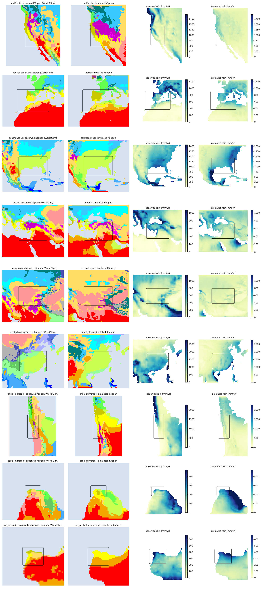
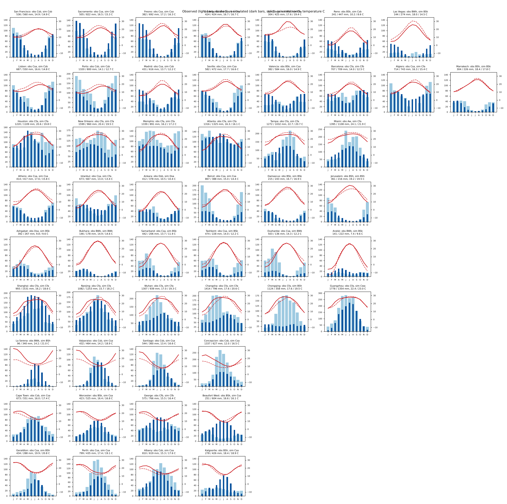
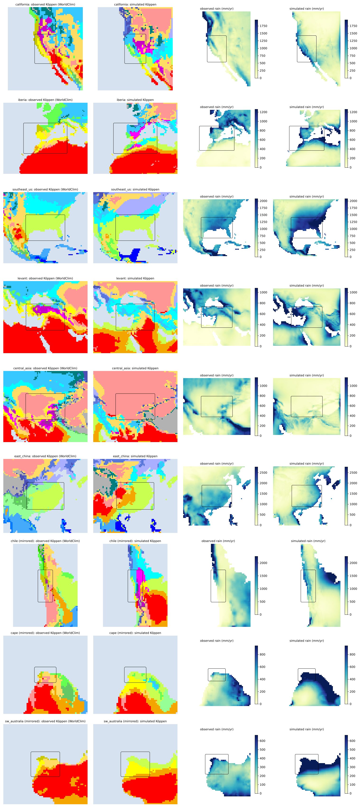
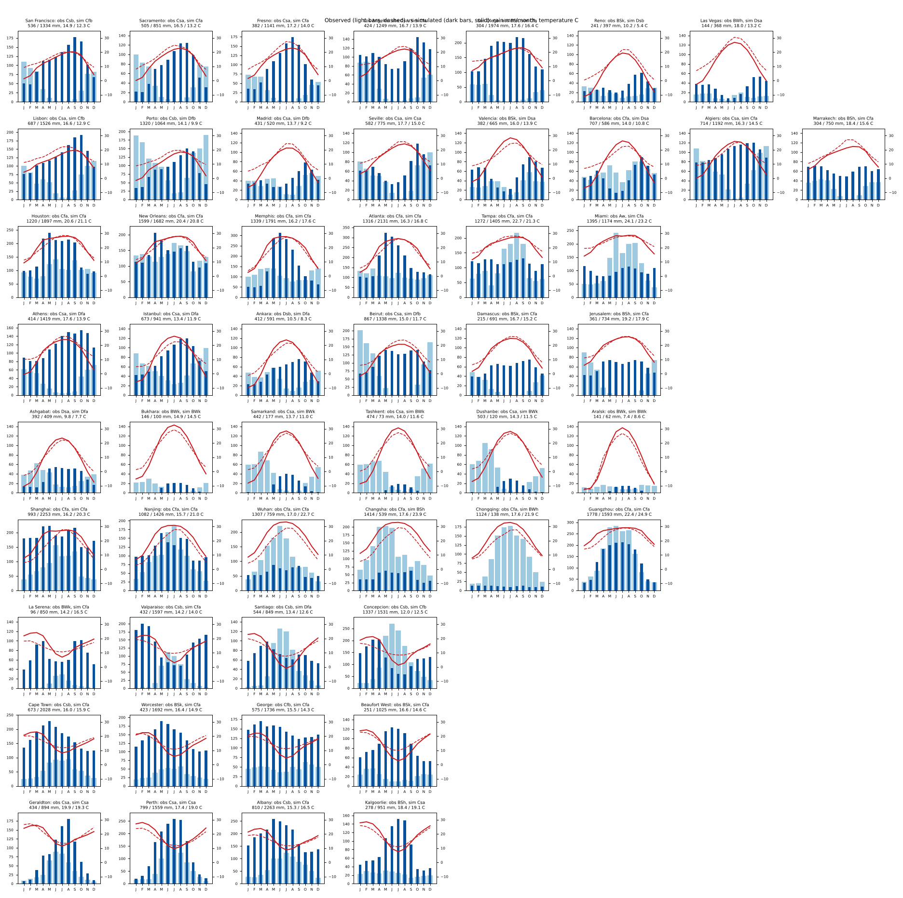
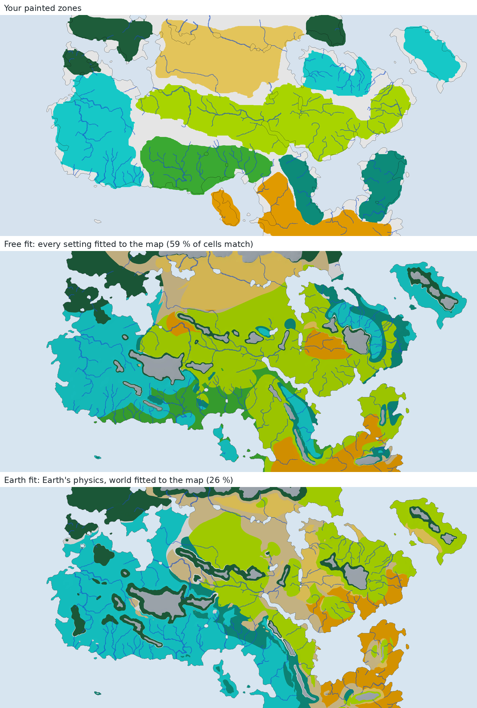

The simulator built for the hand-drawn world was run, unchanged in structure, on nine real regions with their own terrain, Earth's tilt, spin and calendar, and scored against observed 1970–2000 climate (WorldClim 2.1). Then its physics was refitted on Earth and taken back to the map.
Climate distance compares every month's temperature and rain with the observations, cell by cell: 1 is about 2.5 °C or a 100-versus-144 mm month off. Two references come from the observations themselves: every cell given its region's average climate (no skill at all), and every cell given the average climate of its latitude band at its own height (a perfect model with no coasts or rain shadows).
| Region | Distance before | after | Temp. bias | Rain sim / obs | Köppen exact | Cs kept / → arid |
|---|




Each piece answers a failure seen on Earth, is computed from the model's own winds, temperatures and coastline (no geographic labels), and is off by default: the live atlas's settings reproduce it bit for bit.
subsidence_dryingDry air sinking in the subtropical highs replaces moist air, so the column dries without raining. Without it summer rain only waited until the water piled up.
sverdrupLow-level flow toward the pole rises and toward the equator sinks (βv = f ∂w/∂z): dry summers on west coasts, monsoon rain on east coasts.
upwellingWind along a coast drives surface water to its right; where that is offshore, cold water wells up: cold summer seas off California and Iberia, mild winter ones.
continentalityThe share of land the air has recently crossed, carried on the winds: sea air gives mild seasons, continental air harsh ones.
circulation_lag_daysHow far the subtropical highs, storm track and monsoon lag the sun; it was fixed at 30 days and the rainy season began a month early.
land_heat_capacityHow slowly the land warms in spring; with the old value spring arrived a month early on every continent.
subsidence_width · storm_seasonalityTwo constants of the old model made free: how wide the highs sink and how much the storm track weakens in summer.
lapse_rateFitted on Earth where heights are known: 4.4 °C per km near the ground rather than 6. Held fixed on the map, where heights are unknown.
slp_large · slp_localWinds from pressure: warm air makes low pressure at the planetary scale (~2 hPa per K over ~1,800 km) and in the boundary layer (heat lows, sea breezes), turned by Coriolis and slowed by friction. The map, fitted on its own, lands on Earth's planetary value.
far_fetchAir entering a region has crossed the real world beyond it: the grid's edge carries Earth's own westward land share. East China improves by 0.4, and all three held-out regions improve.
Tested since and not adopted: a soil bucket that stores rain for summer evaporation (best of the leads for East China, 2.97 → 2.76, but not better everywhere), a larger domain, far-field pressure and weaker summer trade winds over land. The full account is in the report.
The fit also had to be kept honest. Left free, it moved the subtropical high to 38°N all year, which dried the Mediterranean summers but killed the winter westerlies; bounded to Earth's observed circulation it kept the right climates for the right reasons.

A literature check on the cold-dry north: Earth's dry mid-latitude interiors owe their aridity first to mountains upwind and very long distances from a windward coast (Manabe & Broccoli 1990). Where neither is drawn, physics that works on Earth makes the interior subhumid, so that gap may belong to the map rather than the model.
The workflow is two steps: the model is improved and fitted on Earth, then calibrated freely on the painted map. Two atlases show the map: the free fit, with every setting fitted to your zones, and the Earth fit, whose physics may drift only while its Earth score stays within 3% of the reference.
| Full resolution (downsample 8) | Strict | Med dry | Med Cs | Cold-dry | Hot-dry | Swamp |
|---|---|---|---|---|---|---|
| Old live atlas (retired) | 48.9% | 11.6% | 37.3% | 68.0% | 56.3% | 12.3% |
| Free-fit atlas: every setting fitted to the map, pressure-driven winds | 59.1% | 11.6% | 76.9% | 59.3% | 52.8% | 47.5% |
| Earth-fit atlas: Earth's physics, world fitted to the map, three layouts averaged | 25.7% | 23.9% | 39.5% | 10.8% | 14.7% | 0% |
The free fit sits in the basin a restart campaign found (reversed spin, 32.9°N, 15.8° tilt, north 7.4° anticlockwise of the map's top) and now runs on the same pressure-driven wind equations as the Earth fit; its planetary-scale setting landed on Earth's own value (score 0.529 against 0.520 with the older thermal wind). The Earth fit shows what Earth's physics makes of the same geography: the cold-wet north as painted, but no swamp, little desert and a Mediterranean band that is a quarter dry. The gap between the two is how far the painted zones are from what Earth's rules would give this map.